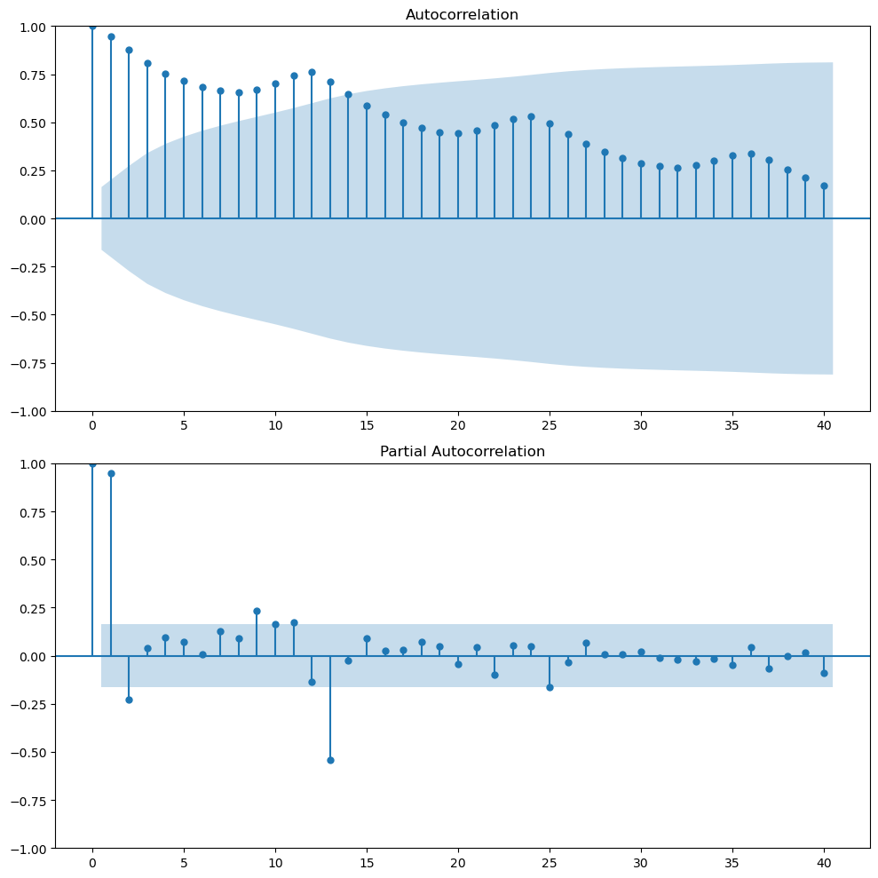
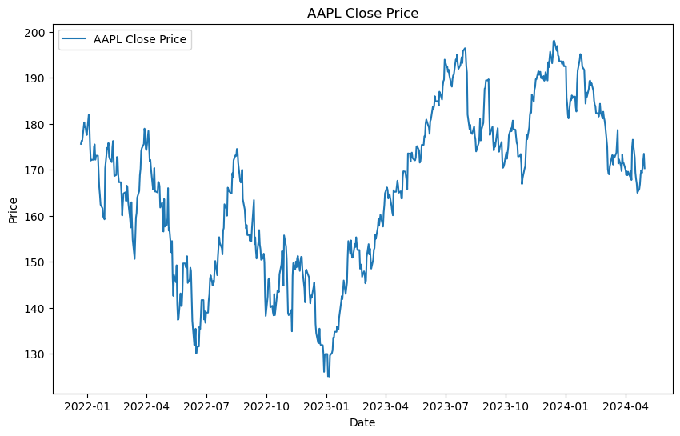
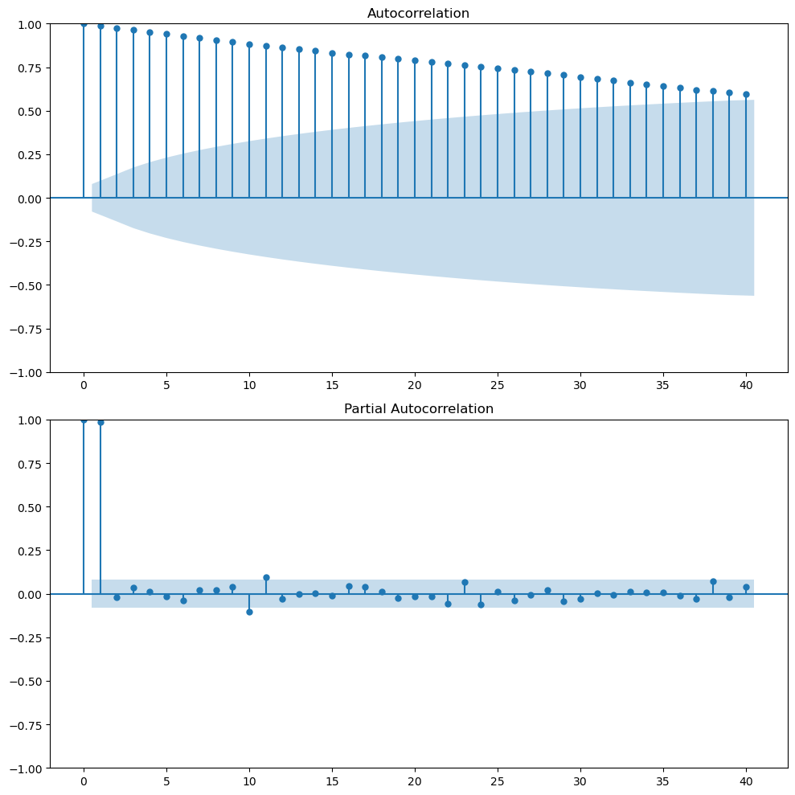

Installation PyCaret, PyTorch, Keras, sktime, Prophet, yfinance, Set up time index, index frequency, Log transformation, Box-cox transformation, ACF and PACF, everything is reflected in today’s price, ACF and PACF, Stationarity and unit-root, Augmented Dickey-Fuller test

Daily Note - 11/06/2024
Install PyCaret
# install full version
pip install pycaret[full]Install PyTorch
First check the version of CUDA installed in your system using nvidia-smi. Install PyTorch following the documentation
Install Keras
You can install Keras from pip:
pip install --upgrade kerasInstall sktime
To install sktime:
pip install sktime[all_extras]Install Prophet
conda install -c conda-forge prophetInstall yfinance
pip install yfinanceDownload a time series data with yfinance
import yfinance as yf
data = yf.download("AAPL", start="2021-01-01", end="2021-12-31")Set up time index
When you are working with time series data, you need to set the time index.
#air.index -> strings of dates (monthly)
air.index = pd.to_datetime(air.index).to_period('M')Set the index frequency to business day
Most of the data providers provide the data with the correct format. However, you still need to check the frequency of the data. If the frequency is not specficied, you need to set it.
For example, you will see that the frequency is none:
DatetimeIndex(['2021-12-22', '2021-12-23', '2021-12-27', '2021-12-28',
'2021-12-29', '2021-12-30', '2021-12-31', '2022-01-03',
'2022-01-04', '2022-01-05',
...
'2024-04-17', '2024-04-18', '2024-04-19', '2024-04-22',
'2024-04-23', '2024-04-24', '2024-04-25', '2024-04-26',
'2024-04-29', '2024-04-30'],
dtype='datetime64[ns]', name='Date', length=591, freq=None)aapl_close = aapl_close.asfreq('B')Do not forget that the next step is to fill the missing values. One method that you can use is forward fill. This means that is tomorrow the market is closed and today price is $100 then the price of tomorrow will be $100.
# aapl_close = aapl_close.ffill(method='ffill') deprecated
aapl_close = aapl_close.ffill()Plot a time series with index period
If you are trying to plot a time series data with index period, you need to be aware that matplotlib does not support it. It’s going to give a error telling you that the index should be a string or a real number.
So if you need your index as a period because you are going to model it with PyCaret or other library, what you can do is the folling:
# air.index.to_timestamp()
plt.figure(figsize=(10, 6))
plt.plot(air.index.to_timestamp(), air.Passengers, label='Airline Passengers')
plt.title('Airline Passengers')
plt.legend()
plt.xlabel('Date')
plt.ylabel('Number of Passengers')
plt.show()This will convert the index to a timestamp and you will be able to plot it.
Log transformation in time series.
When you have a time series that increase its variance over time, you can apply a log transformation to stabilize it. This is one way. There’re different ways like power transformation (like the square root) or box-cox transformation.
Be aware that these transformation can alter the interpretation of the data. The way to determine which transformation to use is to try different ones and see which one fits the best.
Box-cox transformation
Probably the best transformation is the Box-Cox transformation because it’s going to look for the parameter the best transform the data to a normal distribution.
The equation looks like this: \[w_t = \begin{cases} \log(y_t) & \text{if } \lambda = 0 \\ \frac{y_t^\lambda - 1}{\lambda} & \text{if } \lambda \neq 0 \end{cases}\] where \(y_t\) is the original data, \(w_t\) is the transformed data, and \(\lambda\) is the transformation parameter.
When lambda is 0, the transformation is the log transformation. When lambda is 1, our data shift dow, but the the shape of the data doesn’t change. So if the optimal lambda is 1, we don’t need to do anything, the data is already normally distributed.
Yo can find the optimal value of lambda using the scipy.stats.boxcox function.
from scipy.stats import boxcox
air['Passengers_boxcox'], opt_l = boxcox(air.Passengers)where opt_l is the optimal lambda value.
ACF and PACF
ACF (autocorrelation function) is a tool to identify the relationship between the current value and the previous values. It measures the autocorrelation of a time series also called serial correlation. Measure the correlation between the time series and a lagged version of itself. It shows the degree to which the past values are predictive of future values. As always happen with correlation, be aware it’s measuring linear correlation so it’s not going to capture non-linear relationships.
We can use it as a diagnostic tool to identify the order (lags) of the AR and MA components of the ARIMA model. Also, it provides information about the trend and seasonality of the time series.
The following image plot the ACF and PACF of the Airline Passengers dataset.

Looking at the ACF plot, we can notice there’s a downward sloping in term of the magnitude of autocorrelation. That means that there’s a trend in the data. The wave pattern in the ACF plot is a sign of seasonality. For example in our case we have a wave pattern every 12 months (autocorrelation peaks). This means that there’s high correlation between \(y_t\) and \(y_{t-12}\).
PACF (Partial autocorrelation function) measures the correlation between the time series and a lagged version of itself but after removing the effect of the intermediate lags. It provides a more fine-grained view of the relationship between the current value and its immediate past. For example, maybe the correlation between \(y_t\) and \(y_{t-2}\) is highly correlated because both are highly correlated with \(y_{t-1}\). The PACF will show that the correlation between \(y_t\) and \(y_{t-2}\) is not significant after removing the effect of \(y_{t-1}\).
PACF of financial time series (‘everything is reflected in today’s price’)
The following plot shows the Apple stock price from 2021-12-22 to 2024-05-01.

This is a not-well behaved time series where trend changes over time, there’s not clear seasonality, and the variance is not constant.

The ACF plot shows that there’s a high correlation between the current value and the previous values. This is a sign of trend in the data. The PACF plot shows that there’s a high correlation between the current value and the previous value but not with the other lags. This is quite common in stock prices. The partial autocorrelation in lag 1 is almost 1, today’s price and yesterday’s price. So if you control for the effect of intermediate lags there’s nothing left. At least, this one lag is capturing most of the linear relationship.
So if you want to predict the stock price of tomorrow, it seems that the best predictor is today’s price. Here we go with the common saying that everything is reflected in today’s price.
This is the random walk model. Where \(y_{t+1 }= y_{t} + \epsilon_t\). The best predictor of tomorrow’s price is today’s price.
Stationarity and unit-root
A time series is stationary if its statistical properties such as mean, variance, and autocorrelation are constant over time. This means that the time series is not dependent on time.
Stationary time series are easier to model because we can assume that the statistical properties are constant over time.
A time series with a unit root is non-stationary and can be described by a stochastic trend which first difference will be stationary.
Augmented Dickey-Fuller test
The Augmented Dickey-Fuller test is a statistical test that can be used to test whether a time series has a unit root or not. This means to test if the time series is stationary or not. If the p-value is less than a significance level, we reject the null hypothesis that the time series is non-stationary. This suggests strong evidence against the null hypothesis, indicating the series is stationary. If the p-value is greater than the chosen significance level, fail to reject the null hypothesis. This suggests weak evidence against the null hypothesis, indicating the series is non-stationary.
You can use the adfuller function from the statsmodels library.
ad_result = adfuller(air.Passengers)
print('ADF Statistic:', ad_result[0])
print('p-value:', ad_result[1])But if you want to make it more readable, you can create a function that will print the results.
def adf_test(ts):
# Perform Dickey-Fuller test and print full report
result = adfuller(ts)
print('Augmented Dickey-Fuller Test:')
labels = ['ADF Test Statistic', 'p-value', '# Lags Used', '# Observations Used']
for value, label in zip(result, labels):
print(label + ': ' + str(value))
if result[1] <= 0.05:
print("Strong evidence against the null hypothesis")
print("Reject the null hypothesis")
print("Data has no unit root and is stationary")
else:
print("Weak evidence against the null hypothesis")
print("Fail to reject the null hypothesis")
print("Data has a unit root and is non-stationary")